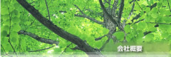
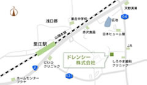

岡山県浅口市鴨方町六条院西2320番地
0865-44-6655

 本社工場
本社工場
ドレンシー株式会社
所在地
●本社工場
〒719-0251 岡山県浅口市鴨方町六条院西2320番地
TEL
(0865)44-6655(代表)
FAX (0865)44-7634
URL
http://www.dorency.com
●大連多連喜保鮮剤有限公司
〒116600 大連経済技術開発区遼寧街27号3号ビル
TEL (0411)-87632861
FAX (0411)-87632895
●多連喜(上海)国際貿易有限公司
〒200052 上海市延安西路1228弄2号8F-F
TEL (021)52541062
FAX (021)52541061
●多連喜精細化工(平湖)有限公司
TEL (0573)5133365
FAX (0411)5133365
創業
昭和61年1月
資本金
1,000万円
営業品目
◆食品鮮度保持剤の製造販売
・脱酸素剤(鉄分系、有機系)
・アルコール揮発剤
・乾燥剤
◆食品加工、原料販売
・大麦若葉
・農・水産品原料の輸入販売
◆アウトドア用品の製造販売
・木炭着火剤
・野外炊飯器
・使い捨てカイロ
工場
■本社工場
■大連工場
■平湖工場
従業員数
105名(本社工場)/50名(大連工場)/100名(平湖工場)
取引銀行
三井住友銀行 岡山支店
三菱東京UFJ銀行 岡山支店
中国銀行 鴨方支店
広島銀行 笠岡支店
トマト銀行 笠岡支店
玉島信用金庫 鴨方支店
商工中金 岡山支店
沿革
昭和61年 ドレンシー製造所として創業開始。
平成9年 ドレンシー株式会社に法人化、事業を継承。
平成10年 上海事務所設立
平成11年 大連多連保鮮剤有限公司開設
平成14年 多連喜(上海)国際貿易有限公司開設
平成17年 多連喜精細化工(平湖)有限公司工場新設
アクセスマップ

詳細地図はこちら
脱酸素剤・カイロ
環境整備関連機器
大麦若葉
会社概要
トップ